Flowers102
Lecture 12 Géron Ch. 12
Applications of Machine Learning
BSc Mathematics of Artificial Intelligence · Third year
Three lectures of neural networks, on flattened 28×28 greyscale images:
Today’s method fixes both problems at once, and the derivation says exactly how much it saves.
Part one
15 minutes · the problem, the data, the stakeholder
A horticultural wholesaler receives mixed pallets of cut stems and has to sort them by species before they reach the auction floor.
Same shape of problem as the garment sorter in Lecture 11. Everything that makes it harder is in the pixels.
Two requirements hiding in one sentence: a classifier over a fixed list of species, and a usable notion of confidence.
We build the first today. The second waits until the numbers are good enough to be worth calibrating.
| Fashion MNIST | Flowers102 | |
|---|---|---|
| Image | 28 × 28, grey | variable, colour |
| Classes | 10 | 102 |
| Training images | 60,000 | 1,020 |
| Images per class | 6,000 | 10 |
| Subject fills the frame | always | sometimes |
Ten times the classes, 59 times fewer labelled images.
torchvision.datasets.Flowers102 — 8,189
photographs of 102 flowering species common in the United
Kingdom.
from torchvision.datasets import Flowers102
train = Flowers102("data", split="train", download=True)
val = Flowers102("data", split="val", download=True)
test = Flowers102("data", split="test", download=True)
About 345 MB. It is one of the datasets the textbook names for this chapter, and the split below is the one shipped with it — so every result in the literature is on the same 6,149 test images.
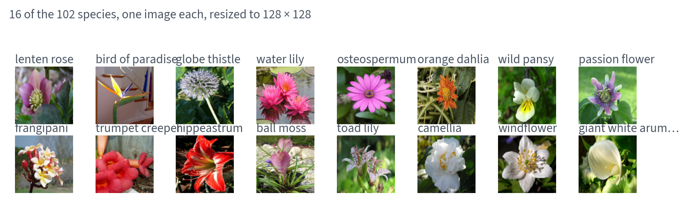
Different scales, different backgrounds, different lighting — and several of these species are hard to tell apart by eye.
Only the first of those has a structural answer. It is the answer this chapter is about.
| Split | Images | Per class | Used for |
|---|---|---|---|
| train | 1,020 | 10, exactly | fitting |
| val | 1,020 | 10, exactly | choosing |
| test | 6,149 | 20–238 | reporting, once |
There are six times as many test images as training images.
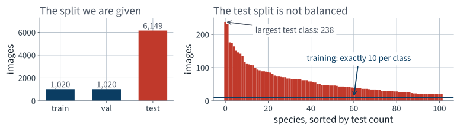
The training split is balanced by construction. The test split is not, and that will matter when we choose a baseline.
Because somebody had to look at every photograph and name the species.
Design for that. A method that needs thousands of labelled examples per class is not a method you can deploy here.
tf = transforms.Compose([
transforms.Resize((128, 128)),
transforms.PILToTensor(), # uint8, (3, 128, 128)
])
x = X_train.float() / 255.0 # the TRAINING split only
mean = x.mean(dim=(0, 2, 3)) # one number per colour channel
std = x.std(dim=(0, 2, 3))
def normalise(x_u8):
return (x_u8.float() / 255.0 - mean[:, None, None]) / std[:, None, None]
| Channel | mean | std |
|---|---|---|
| red | 0.4330 | 0.2896 |
| green | 0.3819 | 0.2408 |
| blue | 0.2964 | 0.2684 |
You have a multilayer perceptron that works. Flatten the image and feed it in.
| Count | |
|---|---|
| Inputs, 128 × 128 × 3 | 49,152 |
| Outputs, 32 values at every pixel position | 524,288 |
| Weights in one fully connected layer between them | 25,769,803,776 |
That is 96 GB of float32 for one layer. The full argument is next lecture's thread; today it is just a reason to do something else.
The mathematics
20 minutes · examinable
You replaced a matrix multiplication with a convolution and the network became trainable.
What exactly did you buy, and what did you give up?
Fix the input and the output shape so the comparison is between two ways of computing the same sized thing.
| Shape | Values | |
|---|---|---|
| Input | 3 × 128 × 128 | 49,152 |
| Output | 32 × 128 × 128 | 524,288 |
The first layer of the network you built in the previous lecture, and the fully connected layer that would produce the identical output shape.
Every output value is connected to every input value:
25,769,803,776 weights.
At four bytes each that is 96 GB, for one layer, before any gradient or optimiser state. No accelerator in the building holds it.
Every output value is connected to a $k \times k$ window of every input channel, and the same weights are used at every position:
4,704 weights.
$H$ and $W$ do not appear. That is not an approximation or a simplification — the image size is genuinely absent from the count.
5,478,275
times fewer weights, for the same output shape.
With the 3 × 3 filters used everywhere else in the network the factor is 29,826,162.
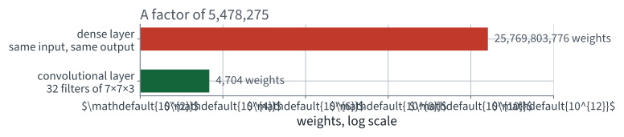
A logarithmic axis, and the two bars still barely fit on the same figure.
It is not a saving in arithmetic.
So the win is in memory and in statistics, not in floating-point operations. Confusing the two is how people end up expecting convolutions to be fast.
A dense layer can represent any convolution: set its weight matrix to the block-Toeplitz matrix that repeats the kernel. Nothing is lost in expressive power.
This is the bias–variance trade of Lecture 5, made architecturally. We bought a large reduction in variance with an assumption we are prepared to defend.
Let $T_{\mathbf{v}}$ be the operator that shifts an image by the vector $\mathbf{v}$:
A map $f$ is equivariant to translation when
Shift then compute, or compute then shift — the same answer.
Write the convolution as $(w * x)(\mathbf{p}) = \sum_{\mathbf{u}} w(\mathbf{u})\, x(\mathbf{p} + \mathbf{u})$. Then
One change of variable. The proof works because $w$ does not depend on $\mathbf{p}$ — which is exactly what weight sharing is. Untie the weights and the middle equality fails.
All three are why the next slide states a measurement rather than an assertion.
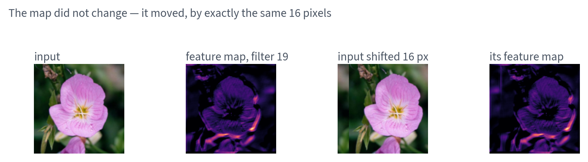
The map did not change shape. It moved, by exactly the 16 pixels the input moved.
y = conv(x)
y_from_shift = conv(torch.roll(x, 16, dims=3))
y_then_shift = torch.roll(y, 16, dims=3)
m = 24 # drop the border and the seam
d = (y_from_shift - y_then_shift)[..., m:-m, m:-m].abs().max()
| Value | |
|---|---|
| largest absolute difference, interior | 0 |
| largest activation, same region | 4.15 |
Bit-for-bit identical, not merely close. On this backend the two computations perform the same additions in the same order, so even the floating-point caveat does not bite — but check it rather than assuming it, because on another backend it will not be exactly zero.
A map $g$ is invariant to translation when
| Under a shift the output… | Keeps where? | |
|---|---|---|
| equivariant | moves with the input | yes |
| invariant | does not change | no |
Invariance is strictly the stronger and strictly the lossier of the two. It is the one you get by discarding the equivariant structure.
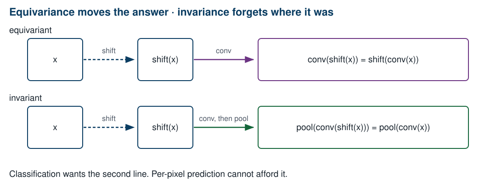
Pooling is what turns the first line into the second.
A $2 \times 2$ max pool is invariant to any shift that keeps the maximum inside its own window — so half the one-pixel shifts, in each direction.
The invariance is approximate and it is built, one factor of two at a time. Nothing in the architecture declares it.
Cosine similarity between the representation of the image and the representation of the image shifted 16 pixels:
| Representation | Cosine similarity |
|---|---|
| the spatial feature maps, flattened | 0.6379 |
| after a global max pool | 1.0000 |
The map changed by 36.2%. The pooled vector changed by 0.0004%.
“This is a sunflower” is true wherever the sunflower is.
The dense head after your four pooling stages sees a 8 × 8 grid rather than a single vector, so the invariance is partial. That is a design choice, and a defensible one.
Segmentation asks a different question: for every pixel, which class is it? The answer is the position.
| Our network | |
|---|---|
| Input grid | 128 × 128 |
| Last feature map | 8 × 8 |
| One cell answers for | 256 pixels |
| Spatial resolution lost | 256× |
Two flower boundaries 15 pixels apart are the same cell. Lecture 14 has to put that resolution back, and the whole of its architecture is about how.
One thing left, and it is the one that stops your Colab session.
Your network has 4,807,494 parameters and
your session died with out of memory.
Which of those two facts caused the other?
| What | Bytes each | Total |
|---|---|---|
| weights | 4 | 18.3 MB |
| gradients, one per weight | 4 | 18.3 MB |
| Adam's first moment | 4 | 18.3 MB |
| Adam's second moment | 4 | 18.3 MB |
| everything parameter-shaped | 16 | 73.4 MB |
Sixteen bytes per parameter, not four. That factor is the first thing people forget, and it is still not the answer.
Lecture 10’s derivation, in bytes: the reverse sweep evaluates each Jacobian at the value the forward pass reached.
So every layer's output stays in memory from the moment it is computed until the backward pass reaches it.
That is not an implementation detail of PyTorch. It is what reverse-mode automatic differentiation is.
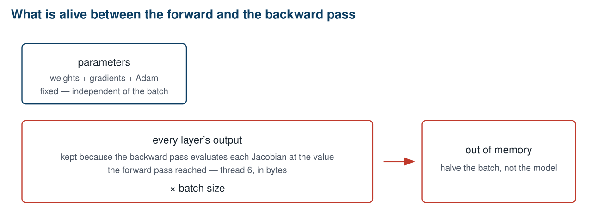
Only one of these two boxes has the batch size in it.
x, total = torch.zeros(1, 3, 128, 128), 0
for m in net:
x = m(x)
total += x.numel()
print(f"{total:,} floats per image")
print(f"{total * 4 / 2**20:,.1f} MB per image")
| Per image | |
|---|---|
| stored activations | 5,964,646 |
| at four bytes each | 22.8 MB |
| MB at batch 32 | |
|---|---|
| weights | 18.3 |
| weights + gradients + Adam | 73.4 |
| activations | 728 |
9.9×
the activations are that many times everything parameter-shaped, put together — and about forty times the weights alone.
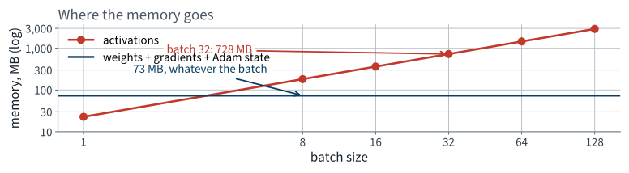
The parameter line does not move. The activation line is a straight line through the origin, and it wins almost immediately.
The activation cost of a layer is $C \times H \times W$. Channels double as the map quarters, so the total halves at every pooling stage.
| Layer | Output | MB at batch 32 |
|---|---|---|
| first convolution | 32 × 128 × 128 | 64 |
| third convolution | 64 × 64 × 64 | 32 |
| last convolution | 256 × 16 × 16 | 8 |
The layers nearest the image are the expensive ones, and they are the ones with almost no parameters.
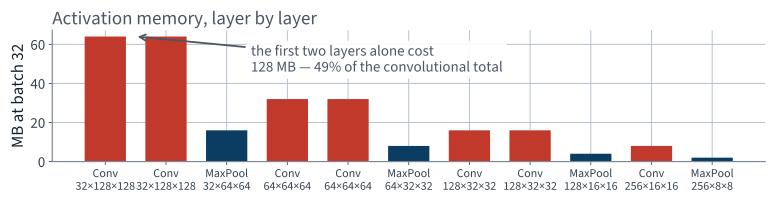
49% of the convolutional activation memory is in the first two layers.
| Concentrated in | Because | |
|---|---|---|
| activations | the early layers | $H$ and $W$ are still large |
| parameters | the late layers | $C_{\text{in}} C_{\text{out}}$ is large, and $k$ is fixed |
Two different bills, sent by two different halves of the same network.
This is why “make the model smaller” and “make the run fit in memory” are different problems with different answers. It comes back in ten minutes, when we choose which block of a pretrained network to unfreeze.
torch.mps.empty_cache()
base = torch.mps.current_allocated_memory() # model + optimiser state
out = net(x) # batch of 32, training mode
torch.mps.synchronize()
print((torch.mps.current_allocated_memory() - base) / 2**20, "MB")
| MB | |
|---|---|
| predicted, by counting outputs | 728 |
| measured, by the backend | 568 |
The measurement is lower than the prediction: the allocator
frees an activation as soon as nothing can still need it, and in a plain
Sequential the ReLU outputs of already-consumed layers qualify.
The prediction is the ceiling, which is the number you want when sizing a
run.
In order: smaller batch, then smaller input resolution (quadratic), then gradient checkpointing, then mixed precision. Reducing the parameter count is near the bottom of the list — and on this network it would mostly delete the dense head, which is not where the memory is.
Point 1 is also, as it turns out, the reason the repair works.
The method
40 minutes · examinable
A feature worth detecting in the top left corner is worth detecting in the bottom right, so use the same weights everywhere.
Both halves get proved next lecture. Today we use them.
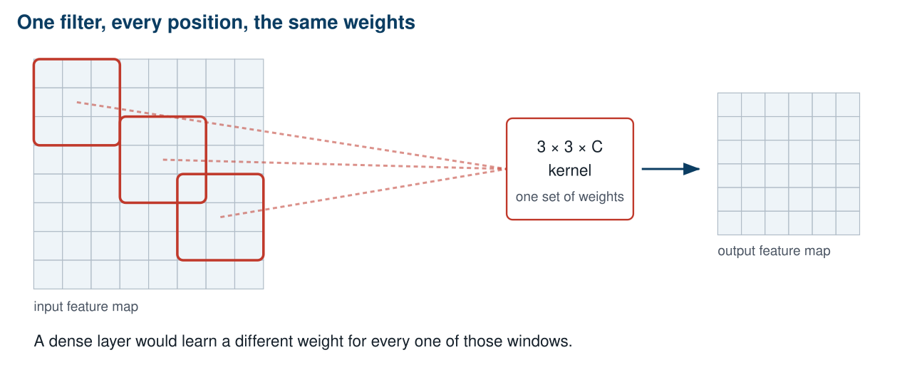
Three windows, one set of weights, one output map. A dense layer would learn a separate weight for every window.
For an input $x$ with $C$ channels and a kernel $w$ of size $k \times k$, the output at position $(i, j)$ of filter $f$ is
A dot product between the kernel and a window of the input, repeated at every position. The sum over $c$ is why a filter reads all the input channels at once.
| Name | What it sets | Ours |
|---|---|---|
| kernel size $k$ | how much of the input one output sees | 7, then 3 |
| stride $s$ | how far the window moves between outputs | 1 |
| padding $p$ | how many zeros ring the input | $k/2$, rounded down |
With $s = 1$ and $p = \lfloor k/2 \rfloor$ the output has the same height and width as the input. That is the setting we use everywhere.
nn.Conv2d, and the defaults you did not ask fornn.Conv2d(
in_channels=3, # must match the previous layer's output
out_channels=32, # how many filters -> how many output maps
kernel_size=7,
stride=1, # the default
padding=3, # NOT the default; the default is 0
bias=False, # a batch-norm follows, and it has its own shift
)
Reviewer question 5, every time: padding defaults to zero, which silently shrinks every feature map by $k-1$ and will eventually give you a shape error twelve layers later.
“Channel” and “feature map” are the same object seen from the two sides of a layer.
Our first layer: $32 \times 3 \times 7 \times 7 = 4,704$ weights.
Notice what is not in that formula.
The image size. A convolutional layer has the same number of parameters on a 128-pixel image as on a four-megapixel one.
After a couple of convolutions, halve the height and width by keeping only the largest value in each $2 \times 2$ block.
There is a fourth consequence, and it is the one the next lecture spends twenty minutes on.
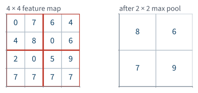
Sixteen numbers in, four out, and the four are the largest of each block.
>>> a = torch.tensor([[[[5., 3., 8., 1.],
... [2., 9., 4., 0.],
... [1., 6., 7., 3.],
... [4., 2., 5., 8.]]]])
>>> nn.MaxPool2d(2)(a)
tensor([[[[9., 8.],
[6., 8.]]]])
kernel_size=2 sets the stride to 2 as well, so
the windows do not overlap. That is the default, and it is the one you want.
Because you proved in the previous lecture that it has to be.
BatchNorm2d normalises across the batch and both
spatial axes, so it holds one mean and one variance per channel
nn.Conv2d(c_in, c_out, 3, padding=1, bias=False)
nn.BatchNorm2d(c_out) # 2 * c_out parameters, not 2 * c_out * H * W
nn.ReLU()
| Stage | Layers | Output |
|---|---|---|
| 1 | conv 7×7 ×32, conv 3×3 ×32, pool | 32 × 64 × 64 |
| 2 | conv ×64, conv ×64, pool | 64 × 32 × 32 |
| 3 | conv ×128, conv ×128, pool | 128 × 16 × 16 |
| 4 | conv ×256, pool | 256 × 8 × 8 |
| head | flatten, dense 256, dropout, dense 102 | 102 |
Channels double as the map halves — the textbook's own rule of thumb, and the reason the memory does not collapse to nothing.
def conv_block(c_in, c_out, k=3):
return [nn.Conv2d(c_in, c_out, k, padding=k // 2, bias=False),
nn.BatchNorm2d(c_out), nn.ReLU()]
net = nn.Sequential(
*conv_block(3, 32, k=7), *conv_block(32, 32), nn.MaxPool2d(2),
*conv_block(32, 64), *conv_block(64, 64), nn.MaxPool2d(2),
*conv_block(64, 128), *conv_block(128, 128), nn.MaxPool2d(2),
*conv_block(128, 256), nn.MaxPool2d(2),
nn.Flatten(),
nn.Linear(256 * 8 * 8, 256), nn.ReLU(),
nn.Dropout(0.5),
nn.Linear(256, 102),
)
Thirty modules. Nothing in it that was not on a slide in this lecture or the previous one.
x = torch.zeros(2, 3, 128, 128)
for m in net:
x = m(x)
print(f"{type(m).__name__:12s} {tuple(x.shape)}")
assert x.shape == (2, 102), f"the head is wrong: {x.shape}"
Reviewer question 3, and it costs four lines. A shape error inside a training loop surfaces as a size-mismatch traceback two hundred lines deep; here it surfaces as a printed line.
| Part | Parameters | Share |
|---|---|---|
| Every convolution and batch-norm layer together | 586,720 | 12.2% |
| One dense layer, 16,384 → 256 | 4,194,560 | 87.3% |
| Output layer, 256 → 102 | 26,214 | 0.5% |
| Total | 4,807,494 | 100% |
Nine parameters in ten are in the layer that is not convolutional.
4,807,494 parameters. 1,020 training images.
4713
parameters per training image.
There is nothing in the architecture stopping this network from storing the training set. Dropout at 0.5 is the only thing we have asked to prevent it, and it will not be enough.
opt = torch.optim.Adam(net.parameters(), lr=3e-4)
lossf = nn.CrossEntropyLoss()
for epoch in range(80):
net.train()
for xb, yb in train_loader:
opt.zero_grad()
loss = lossf(net(xb), yb)
loss.backward()
opt.step()
Exactly the five lines from Lecture 10. Convolution changed the model; it did not change the loop, because autograd does not care what the modules are.
| Learning rate | Mean test accuracy | sd over seeds |
|---|---|---|
| $10^{-3}$, Adam's default | 2.7% | 1.31 pts |
| $3 \times 10^{-4}$ | 14.7% | 2.59 pts |
Measured on this architecture and this data, at 40 epochs. The default does not diverge — it plateaus low, which is the failure mode that does not announce itself.
12.1 points, from one keyword argument nobody wrote down.
| Setting | Value |
|---|---|
| Epochs | 80 |
| Batch size | 32 |
| Steps per epoch | 32 |
| Total optimiser steps | 2,560 |
| Wall clock, seed 42 | 253 s |
Measured on an Apple MPS backend, no CUDA, and including a validation pass after every epoch. A free Colab T4 is in the same range for a model this size; the point of the number is the comparison we make next lecture, not the hardware.
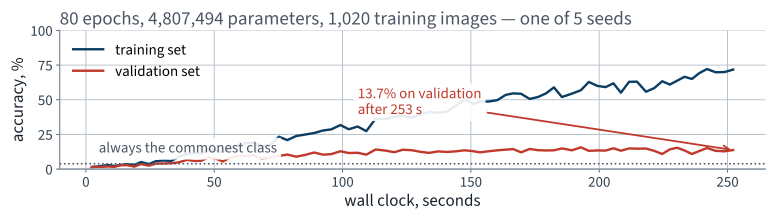
The x-axis is seconds, not epochs. That is deliberate: from the next lecture on, time is one of the things being compared.
Both curves are correct. They are describing two different things.
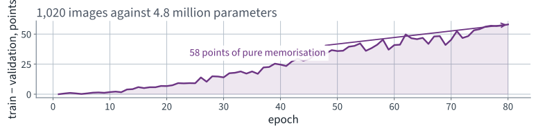
58 points of the training accuracy is memorisation. Lecture 5 named this shape: a persistent gap is variance.
net.eval()
with torch.no_grad():
correct = sum((net(xb).argmax(1) == yb).sum().item()
for xb, yb in test_loader)
print(f"test accuracy {correct / len(test_ds):.4f}")
15.3%
Mean over 5 seeds, standard deviation 2.34 points, range 11.0% to 18.1%. One run of a network this size on 1,020 images is an anecdote.
| Seed | Test accuracy |
|---|---|
| 42 | 11.0% |
| 43 | 15.7% |
| 44 | 18.1% |
| 45 | 16.1% |
| 46 | 15.7% |
7.1 points between the best and the worst, and nothing changed but the seed.
Any comparison you make from here that is smaller than that is not a comparison.
| Model | Test accuracy | Wall clock |
|---|---|---|
| Uniform random guess | 0.98% | — |
| Always the commonest species | 3.87% | — |
| Convolutional network, from scratch | 15.3% | 364 s |
| What the operator needs | 90% | — |
4.0 times the majority baseline — and a long way from deployable.
The first layer's weights are 4,704 numbers arranged as 32 filters of $7 \times 7 \times 3$. That is small enough to look at.
w = net[0].weight.detach().cpu() # (32, 3, 7, 7)
lo = w.amin(dim=(1, 2, 3), keepdim=True)
hi = w.amax(dim=(1, 2, 3), keepdim=True)
grid = ((w - lo) / (hi - lo)).permute(0, 2, 3, 1) # ready for imshow
Each filter is rescaled to its own range, because otherwise the strongest filter is the only one you can see. Keep the initialisation, so there is something to compare against.
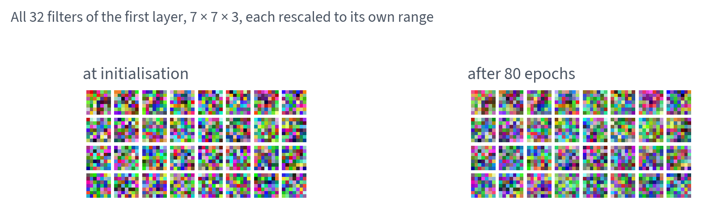
Look at the two blocks for ten seconds before the next slide, and say what changed.
import torch.nn.functional as F
before, after = init_filters.flatten(), net[0].weight.flatten()
print(f"cosine similarity {F.cosine_similarity(before, after, dim=0):.4f}")
print(f"mean |change| / mean |weight| "
f"{(after - before).abs().mean() / before.abs().mean():.1%}")
| Value | |
|---|---|
| cosine similarity, all 4,704 weights before against after | 0.9694 |
| mean absolute change, as a share of the mean weight | 23.9% |
| weights that changed sign | 247 |
The weights moved. No structure appeared — the right-hand block is still noise, and 253 seconds of training bought it.
The textbook picture of a first layer — colour blobs, oriented edges — is real, and you will see it next lecture. It comes from a corpus a thousand times this size.
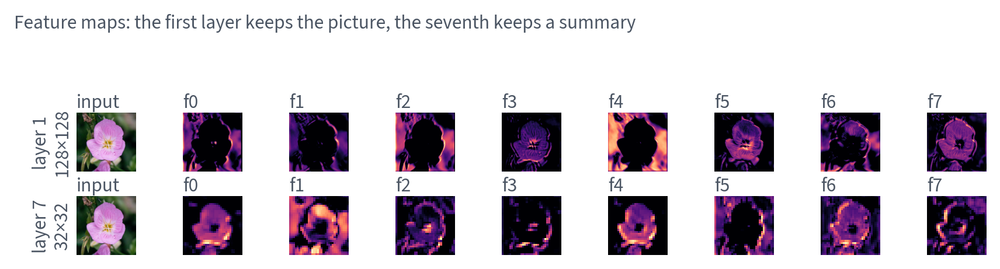
Early maps still look like the photograph. Four layers down they do not, and that is the point.
That last line is a loss of information we chose. Next lecture asks what we lost and whether we wanted to.
The last fifteen minutes
15 minutes
| Test accuracy | |
|---|---|
| Uniform guess | 0.98% |
| Commonest species | 3.87% |
| Yours, today | 15.3% |
| Operator's requirement | 90% |
Write your measured number on the same sheet, next to the one you predicted.
Each of those is a lever. Two of them move the number a great deal, and one of the two moves it by more than everything else in this course put together.
Quote the spread whenever you quote the number. It is the difference between a measurement and an anecdote.
| Term | Means |
|---|---|
| filter / kernel | the $C \times k \times k$ block of weights that is shared across positions |
| feature map | the two-dimensional output of one filter over the whole input |
| channel | a feature map, seen from the next layer |
| stride | how far the window moves between outputs |
| padding | zeros added around the input so the output keeps its size |
| receptive field | how much of the original image one unit can see |
One unit of the first layer sees $7 \times 7$ pixels. Stack a $3\times3$ convolution on it and the unit sees $9 \times 9$; pool, and the next one sees twice as much again in each direction.
By the last convolution a unit sees most of the image. That is why a network with $3\times3$ filters can recognise an object larger than any single filter — depth buys extent.
| Mistake | Symptom |
|---|---|
padding=0 left at the default | maps shrink; a shape error many layers later |
Forgetting net.eval() | the score wobbles between calls — Lecture 10 |
| Normalising with test statistics | measured today at 0.25 points |
lr left at Adam's default | 12.1 points, and no error |
| Pooling before any convolution | throws away the pixels before anything reads them |
Because you tried that in Lecture 11, and because there is nothing left to learn from.
Which of those two we can actually get more of is the question the next lecture answers.
| Topic | Chapter |
|---|---|
| Convolutional layers, filters, feature maps | 12 |
| Stacking multiple feature maps | 12 |
| Pooling layers | 12 |
| A CNN architecture for image classification | 12 |
| Batch normalisation, Adam, dropout | 11 |
| Colab runtimes, dataset caching | not examinable |
Set last time
not presented
1. One layer multiplies the standard deviation of the backward signal by…
They multiply by $\rho^L$; anything else vanishes or explodes geometrically.
2. Preserving the forward signal asks for $\operatorname{Var}(w) = 1/n_{\text{in}}$ and preserving the gradient…
They agree only when $n_{\text{in}} = n_{\text{out}}$; Glorot takes the harmonic mean, $2/(n_{\text{in}}+n_{\text{out}})$.
3. He initialisation doubles the weight variance for ReLU. Derive the factor of two in one line.
ReLU zeroes half of a symmetric zero-mean input, so $\mathbb{E}[\text{ReLU}(z)^2] = \tfrac12\mathbb{E}[z^2]$.
4. A gradient profile that is a straight line on a log axis tells you something a curved one does not. State…
The attenuation is the same factor at every layer, so it is the initialisation rather than one bad layer.
5. Gradient clipping is applied to a network whose gradients are fifteen orders of magnitude too small. Predict…
No effect — clipping bounds gradients that are too large.
Not presented — for afterwards
five, in the style of the written paper
Solutions on Lecture 13’s deck.
Solutions on Lecture 13’s deck.
Lecture 13 · Géron Ch. 12
Why features learned on one corpus transfer, and how far down the stack
that holds
Freezing, progressive unfreezing, differential learning rates
The same accuracy as today, in a fraction of the training
Run the Lecture 12 notebook first